Agent CLI を利用した Google Cloud 上でのエージェント構築とデプロイ
このハンズオン（ラボ）では、Google Cloud のツールを活用して、プロダクション環境に対応したエージェント型アプリケーションを構築する方法を学びます。
環境のセットアップ
プロジェクトの設定
- 次のリンク GCP コンソールをクリックして、GCP コンソールに移動します。
- 使用できるプロジェクトがまだない場合は、GCP コンソールで新しいプロジェクトを作成する必要があります。プロジェクト セレクタ（Google Cloud コンソールの左上）でプロジェクトを選択します。まだプロジェクトがない場合は、こちらの手順に沿って新しいプロジェクトを作成してください。新しいプロジェクトを作成したら、プロジェクトを選択してください。
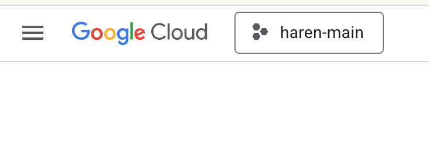
- このラボでは、Cloud Shell エディタを使用してタスクを実行します。Cloud Shell を開き、Cloud Shell を使用してプロジェクトを設定します。
- このリンクをクリックすると、Cloud Shell エディタに直接移動します。
-
Cloud Shell エディタのサイドバーで、[フォルダを開く] ボタンをクリックします。
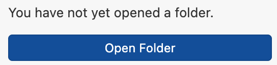
-
ホームフォルダはすでに選択されているはずです。[OK] を押すと、ホームフォルダがこのタスクのルートフォルダになります。
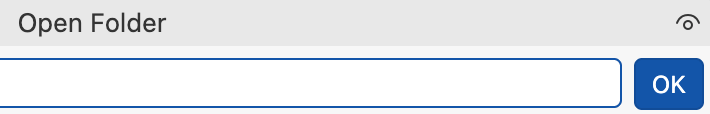
- メニューから [Terminal] > [New Terminal] をクリックして、ターミナルを開きます（まだ開いていない場合）。このチュートリアルのコマンドはすべて、このターミナルで実行できます。
- プロジェクトがすでに認証されているかどうかは、Cloud Shell ターミナルで次のコマンドを使用して確認できます。
gcloud auth list- プロジェクト ID がわからない場合は、次のコマンドを使用してすべてのプロジェクト ID を一覧表示できます。
gcloud projects list- プロジェクト ID をコピーし、次のコマンドを使用して設定します。
gcloud config set project <YOUR_PROJECT_ID>- Cloud Shell で次のコマンドを実行して、プロジェクトを確認します。
gcloud config list projectAPI を有効にする
このラボを実行するには、いくつかの API サービスを有効にする必要があります。Cloud Shell で次のコマンドを実行します。
gcloud services enable aiplatform.googleapis.com
gcloud services enable cloudresourcemanager.googleapis.comAPI の概要
-
Vertex AI
API（
aiplatform.googleapis.com）を使用すると、Vertex AI プラットフォームにアクセスできます。これにより、アプリケーションはテキスト生成、チャット セッション、関数呼び出しのために Gemini モデルを操作できます。 -
Cloud Resource Manager API（
cloudresourcemanager.googleapis.com）を使用すると、プロジェクト ID や名前など、Google Cloud プロジェクトのメタデータをプログラムで管理できます。これは、プロジェクトの ID と権限を確認するために他のツールや SDK で必要になることがよくあります。
Agent CLIをインストール
Google Agent CLI（agents-cli）は、Agent Development
Kit（ADK）を用いたエージェント型アプリケーションのプロジェクト作成、ローカルテスト、および Google Cloud Agent Platform
へのデプロイを効率的に行うためのコマンドラインツールです。
Cloud Shell Editor のターミナルで以下のコマンドを実行します。
mkdir nototoki
cd nototoki && uv venv
source .venv/bin/activate
uv pip install google-adk
uvx google-agents-cli setup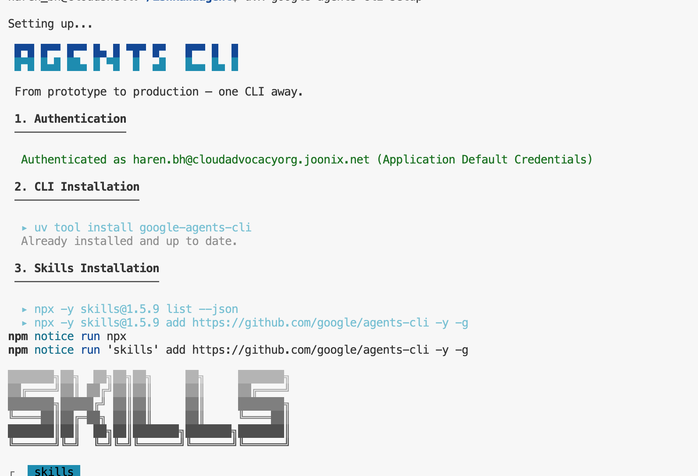
図 1 のような画面が表示されれば、Agent CLI のインストールは完了です。
Antigravity CLIの起動
Cloud Shell ターミナルで Antigravity CLI（agy）を起動します。
agy起動すると、以下のような画面が表示されます。
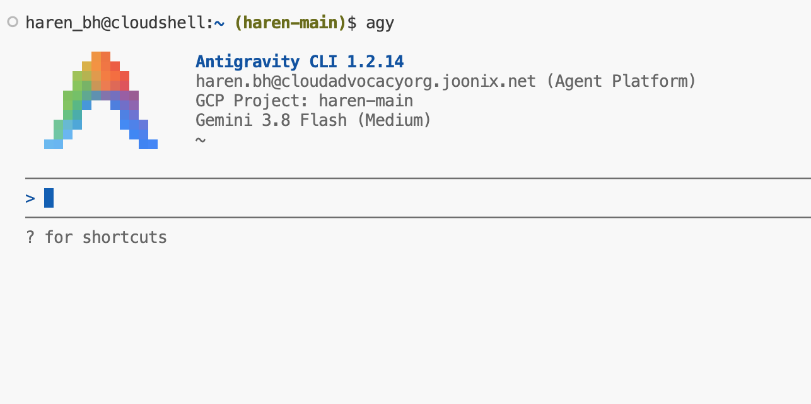
最初のエージェントの構築
このラボの後半では独自のカスタムエージェントを設計しますが、まずは基本となるエージェントを構築してテストしてみましょう。
今回は、能登半島のトキに関する情報を検索・提供するエージェントを作成します。
Antigravity CLI に以下のプロンプトを入力してください。
agents-cli を使用して、Google 検索で能登半島のトキの情報を調べてくれるエージェントを作成してください。
トキ以外の質問には回答しないようにしてください。
挨拶された場合は、「能登のトキについてどのようなことを調べたいですか？」といった返答をしてください。処理が完了すると、AGY は以下のような出力を生成します。
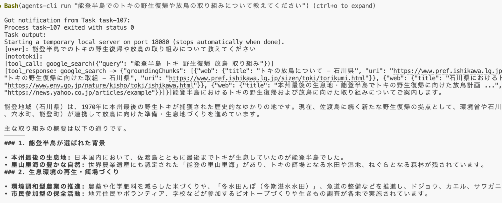
バックグラウンドでは、agents-cli が Python
によるエージェント定義や各種設定、ローカル実行・プレイグラウンド用環境など、ADK
プロジェクトに必要なボイラープレートを自動生成します。手動でコードを書く手間が省けるため、エージェントの振る舞いの定義にすぐ集中できます。
続いて、Antigravity CLI 上でプロンプトを入力し、エージェントの動作をテストしてみましょう。
「能登半島でのトキの野生復帰や放鳥の取り組みについて教えてください」というメッセージで私のエージェントをテストするエージェントのロジックは app/agent.py ファイルで確認できます。
agy --resume
を実行することで、いつでも過去のセッションを再開できます。
プレイグラウンド（Playground）
エージェントは Playground（ブラウザベースの Dev UI）でもテストできます。単に対話するだけでなく、セッション（sessions）の確認や各ターンのトレース（traces）のステップ実行など、内部動作を可視化できます。Antigravity CLI で次のように指示してください。
エージェントのプレイグラウンドを起動してください。その際、-allow_origins "regex:https://.*8080-.*\.cloudshell\.dev" オプションを付与してください。エージェントのプレイグラウンドを起動する, -allow_origins "regex:https://.*8080-.*\.cloudshell\.dev" オプションをつける
AGY がバックグラウンドで Playground を起動し、ローカル URL（通常は http://localhost:8080）を出力します。
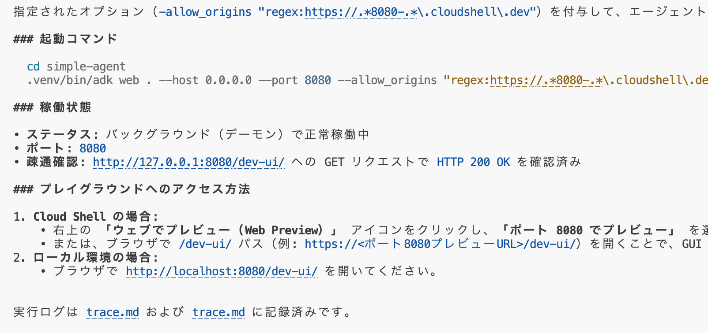
表示された http://localhost:8080/dev-ui を Ctrl +
クリック すると、UI 画面が開きます。
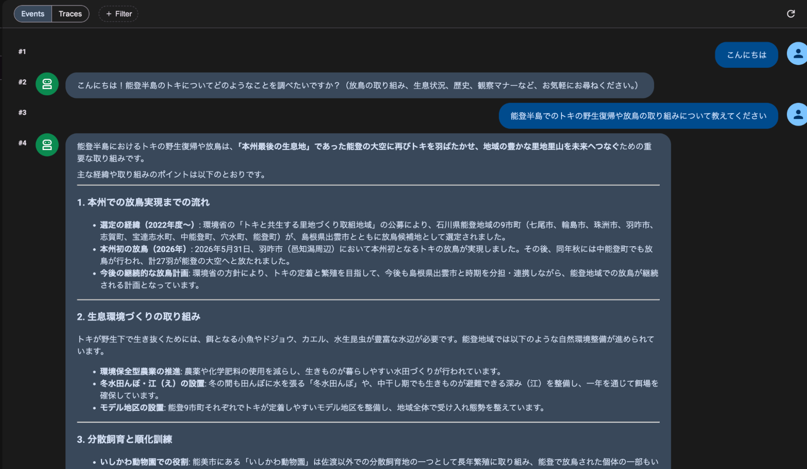
Agent Platform へのデプロイ
Google Cloud へのデプロイは、Antigravity CLI に対して Agent Platform へデプロイするよう指示するだけで完了します。
エージェントを停止してください。エージェントを Agent Runtime にデプロイしてください。デプロイには数分かかる場合があります。完了すると、Agent Platform 上でエージェントが確認できるようになります。
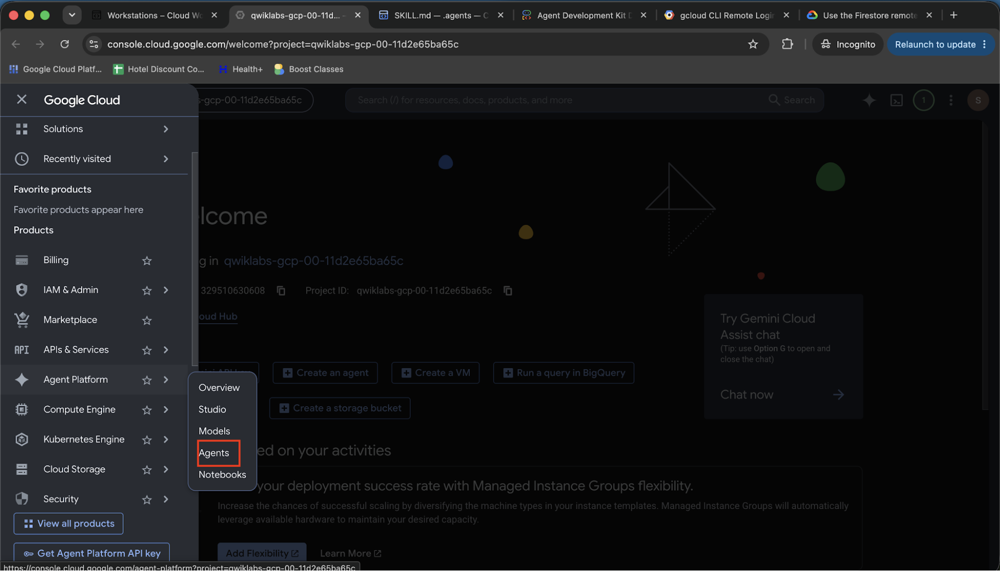
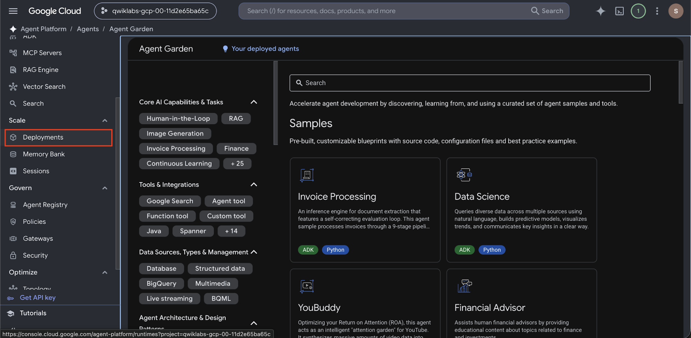
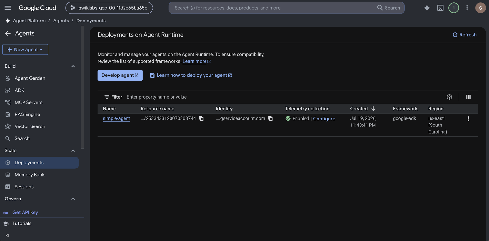
対象のエージェントをクリックすると、本番環境でのモニタリングや各種管理ツールを利用できます。
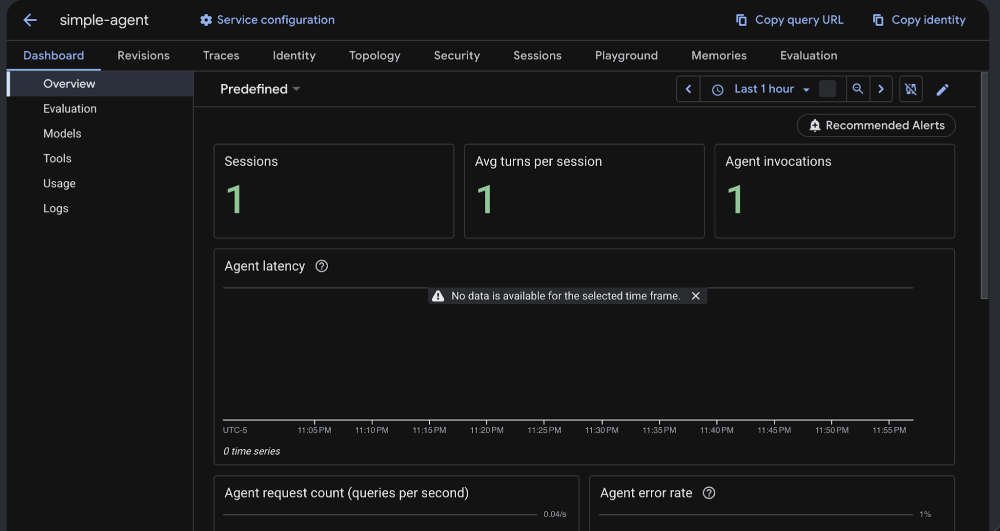
次のチャレンジ
作成したエージェントに、以下のような新機能を追加してみましょう。
- Web UI を作成し、画面経由でエージェントにアクセスする
- 画像生成機能を追加する
- ユーザー認証機能を導入する
- その他の独自の拡張機能